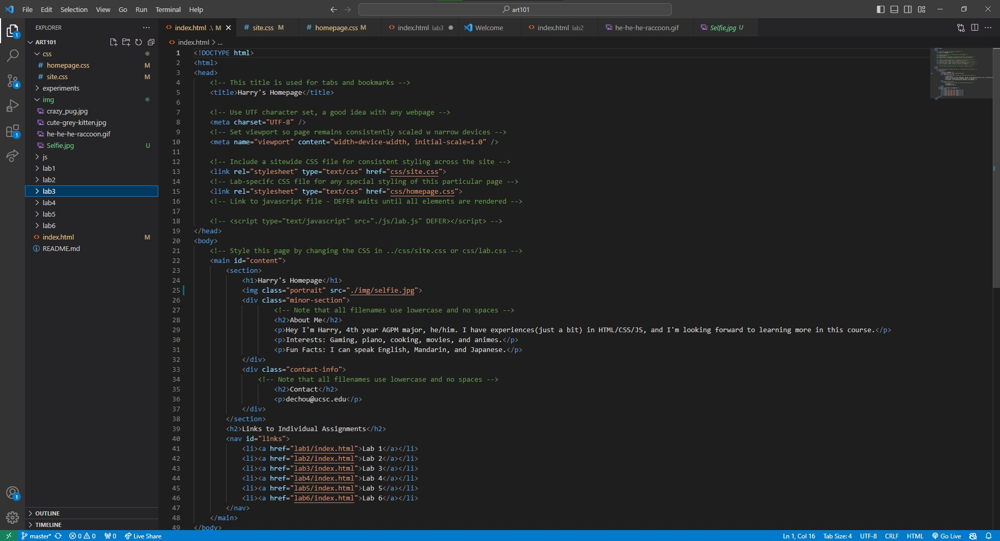

Lab 3 - File Structure and File Transfer
Challenge
Overall, it's a very easy task. I used what I've worked on during InstallFest and edited them to meet the assignment requirement. The only challenge I had was probably just trying to get my screenshots organized, but it wasn't that big of a problem.
Results
This is the end result of my webpage. Screenshots are presented below.
